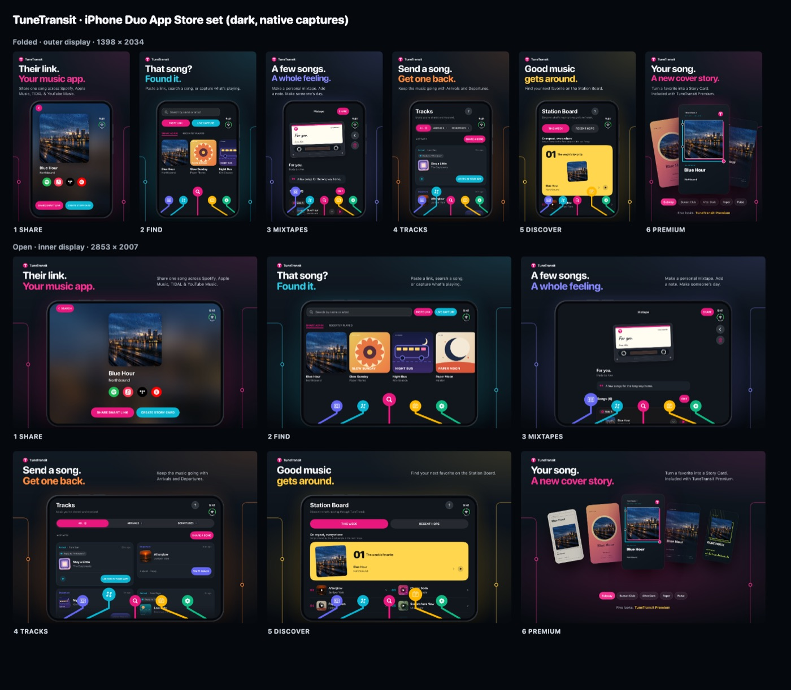
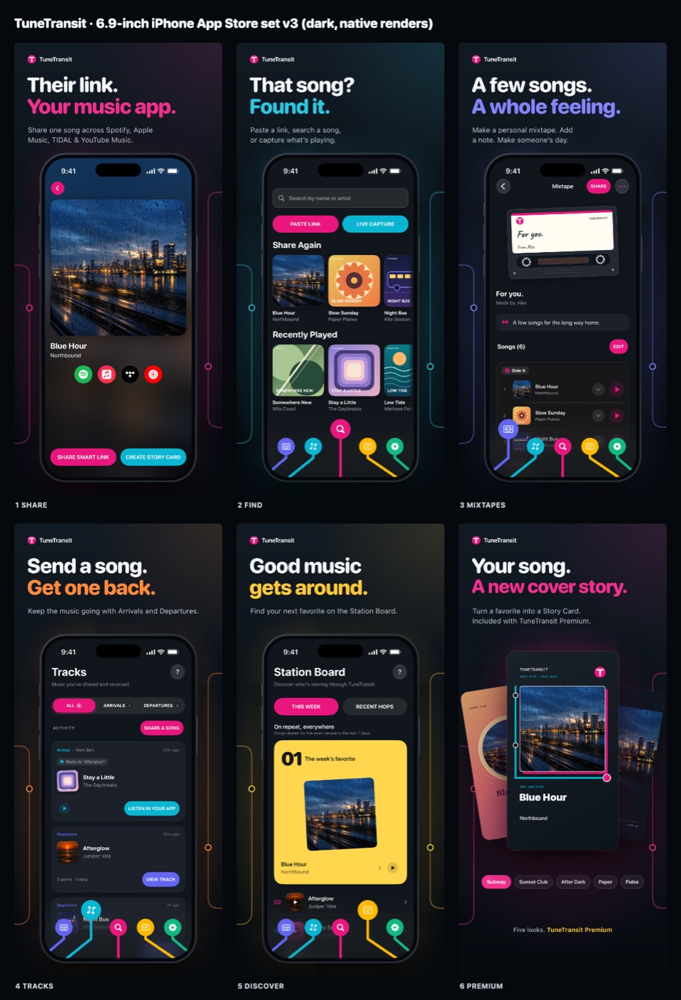

Free
$0
3 song or album searches a day and mixtapes of up to 5 songs.
Press kit · TuneTransit 3.1
TuneTransit turns any song into one link that opens in Apple Music, Spotify, TIDAL or YouTube Music. The person you send it to doesn’t need the app or an account.
View on the App Store ↗Press and App Store editors: mail@tunetransit.app
Jump to downloads ↓About the app
What’s new in 3.1
Pricing
Opening a Smart Link is always free, in any browser, with no download. Prices are in US dollars; local pricing is shown in the app. Compare Free and Premium
$0
3 song or album searches a day and mixtapes of up to 5 songs.
$1.99 / month
Unlimited searches, mixtapes of up to 500 songs, Story Cards, TuneMessage, share sheet search and Now Playing widgets.
$9.99 once
The same Premium features with a one-time purchase.
Downloads
Free to use when writing about TuneTransit. The screenshots are real renders of the app, but the song titles, artists, artwork and activity shown are fictional demo content.

Six App Store screenshots in both sizes: folded (cover display, 1398 × 2034 px) and open (inner display, 2853 × 2007 px).
Download ZIP
The six App Store screenshots for iPhone with Dynamic Island, 1320 × 2868 px.
Download ZIPAll five Story Card designs, exported by the app at 1080 × 1920 px. Tap a card for its PNG.
Download all 5Contact
TuneTransit is made by one developer, so you’ll hear back from the person who built it.
mail@tunetransit.app